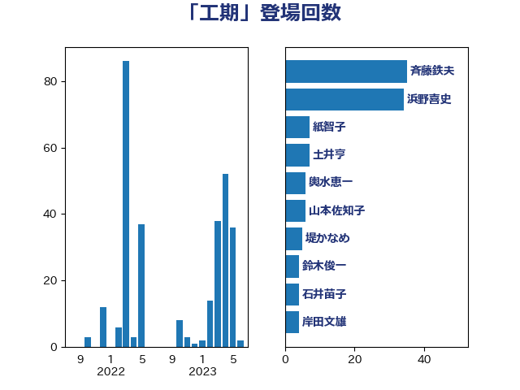

単語「工期」

| 斉藤鉄夫 | 公明党 | 35 回 |
| 浜野喜史 | 国民民主党 | 34 回 |
| 紙智子 | 日本共産党 | 7 回 |
| 土井亨 | 自由民主党 | 7 回 |
| 輿水恵一 | 公明党 | 6 回 |
| 山本佐知子 | 自由民主党 | 6 回 |
| 堤かなめ | 立憲民主党 | 5 回 |
| 鈴木俊一 | 自由民主党 | 4 回 |
| 石井苗子 | 日本維新の会 | 4 回 |
| 岸田文雄 | 自由民主党 | 4 回 |
| 前原誠司 | 国民民主党 | 4 回 |
| 高橋千鶴子 | 日本共産党 | 3 回 |
| 足立敏之 | 自由民主党 | 3 回 |
| 西村智奈美 | 立憲民主党 | 3 回 |
| 西村康稔 | 自由民主党 | 3 回 |
| 石井浩郎 | 自由民主党 | 3 回 |
| 川田龍平 | 立憲民主党 | 3 回 |
| 小森卓郎 | 自由民主党 | 3 回 |
| 室井邦彦 | 日本維新の会 | 3 回 |
| 伊藤渉 | 公明党 | 3 回 |
| 逢坂誠二 | 立憲民主党 | 2 回 |
| 豊田俊郎 | 自由民主党 | 2 回 |
| 田村まみ | 国民民主党 | 2 回 |
| 浜田靖一 | 自由民主党 | 2 回 |
| 山本香苗 | 公明党 | 2 回 |
| 和田政宗 | 自由民主党 | 2 回 |
| 中川康洋 | 公明党 | 2 回 |
| 音喜多駿 | 日本維新の会 | 1 回 |
| 鈴木敦 | 国民民主党 | 1 回 |
| 西村明宏 | 自由民主党 | 1 回 |
| 芳賀道也 | 国民民主党 | 1 回 |
| 穀田恵二 | 日本共産党 | 1 回 |
| 福重隆浩 | 公明党 | 1 回 |
| 福山哲郎 | 立憲民主党 | 1 回 |
| 石井章 | 日本維新の会 | 1 回 |
| 田島麻衣子 | 立憲民主党 | 1 回 |
| 田中健 | 国民民主党 | 1 回 |
| 源馬謙太郎 | 立憲民主党 | 1 回 |
| 清水真人 | 自由民主党 | 1 回 |
| 津島淳 | 自由民主党 | 1 回 |
| 永井学 | 自由民主党 | 1 回 |
| 松野明美 | 日本維新の会 | 1 回 |
| 志位和夫 | 日本共産党 | 1 回 |
| 岩渕友 | 日本共産党 | 1 回 |
| 岡田直樹 | 自由民主党 | 1 回 |
| 山崎正恭 | 公明党 | 1 回 |
| 山岸一生 | 立憲民主党 | 1 回 |
| 山岡達丸 | 立憲民主党 | 1 回 |
| 小野泰輔 | 日本維新の会 | 1 回 |
| 守島正 | 日本維新の会 | 1 回 |
| 塩田博昭 | 公明党 | 1 回 |
| 加田裕之 | 自由民主党 | 1 回 |
| 伊波洋一 | 無所属 | 1 回 |
| 仁木博文 | 無所属 | 1 回 |
| 中川宏昌 | 公明党 | 1 回 |
| おおつき紅葉 | 立憲民主党 | 1 回 |